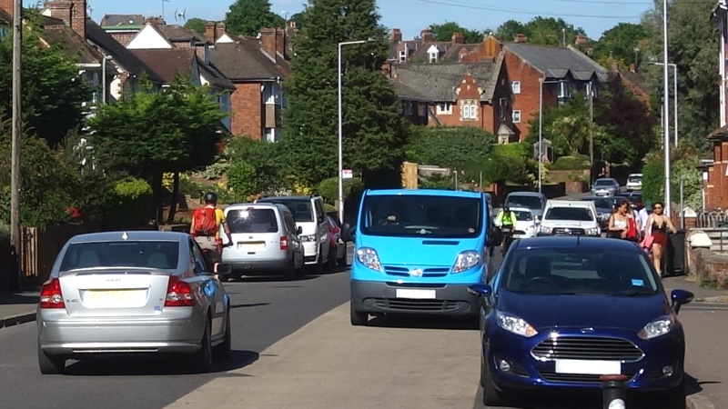
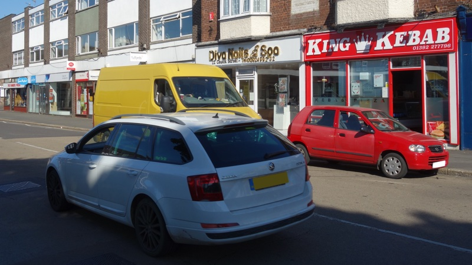
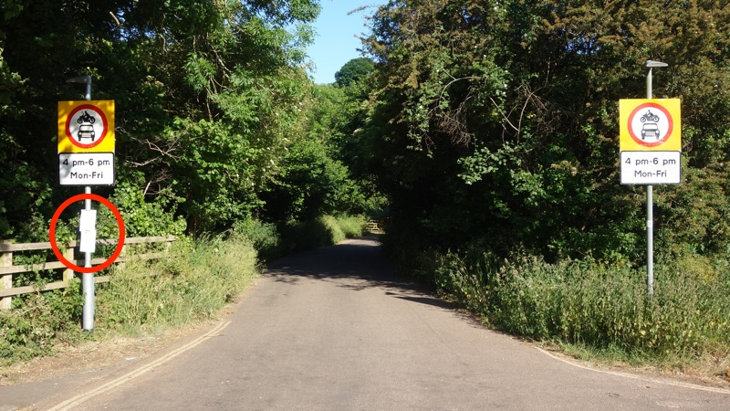

Devon County Council has delivered none of the pop-up infrastructure it proposed to enable safe cycling and walking in Exeter during the coronavirus pandemic.
Andrew Leadbetter, county councillor for Wearside & Topsham and Exeter’s only county cabinet member, confirmed that proposals outlined by the county nearly three weeks ago would be delivered by today.
However no changes have been made to the road layout on Fore Street, South Street, North Street, Cowick Street or Magdalen Road.
Andrew Leadbetter also said proposals to accelerate the delivery of planned changes on Union Road, as part of the E4 cycle route linking Exeter Science Park with the university, would be considered. But no action has so far been taken.
He said: “This work does cost money and is partly reliant on us getting the money from government. But we want to do this and we are going with temporary traffic orders so we can put these things in.”
 Cyclists, pedestrians and cars compete for space on Union Road today
The government announced a £250 million emergency active travel fund on 9 May directing local highways authorities to reallocate road space to walking and cycling to relieve pressure on public transport as lockdown eases.
Transport Secretary Grant Shapps said: “The government expects local authorities to make significant changes to their road layouts to give more space to cyclists and pedestrians”.
The accompanying guidance said “whole route” approaches should be taken to “create corridors for buses, cycles and access only on key routes into town and city centres”.
The government directed Devon County Council to implement such measures “as swiftly as possible, and in any event within weeks, given the urgent need to change travel habits before the restart takes full effect”.
According to legal advice received by the All Party Parliamentary Group for Cycling and Walking, councils are compelled to make the changes and central government could step in to take powers away from councils to ensure interventions are made.
But despite receiving a share of the fund worth nearly £1.7 million last week Devon County Council has yet to implement the government’s wishes.
 Vehicles on Cowick Street today
The Department for Transport wrote to Devon County Council on 27 May to confirm that the money would be made available “so that work can begin at pace on closing roads to through traffic, installing segregated cycle lanes and widening pavements”.
Rupert Furness, deputy director for active and accessible travel, said: “The main purpose of the initial funding is to promote cycling as a replacement for journeys previously made by public transport”.
He added: “The amounts are only indicative. To receive any money under this or future tranches, you will need to show us that you have swift and meaningful plans to reallocate road space to cyclists and pedestrians, including on strategic corridors.
“Anything that does not meaningfully alter the status quo on the road will not be funded.”
However while a statement from the county council the following day acknowledged that traffic on Devon’s roads had increased by 50% from lockdown levels and that average speeds had also risen, it simply encouraged road users to be more considerate of each other.
And in a recent road space reallocation guidance document the county said that the strategic route changes directed by the transport secretary are “unlikely to be delivered as part of this initiative”.
 Ludwell Lane (Devon County Council traffic regulation order notice marked in red)
Meanwhile, notices have appeared on Ludwell Lane which say that a fifteen metre section has been closed to through traffic from today to enable COVID-19 transport response works.
Local residents out walking their dogs said they had not been contacted about the road closure despite living immediately beside it.
At the same time a series of vehicles drove along the closed section in both directions, prompting them to question how the highways authority planned to enforce the change.
On hearing of the Department of Transport funding, they joked that Devon County Council must be trying to pass Ludwell Lane off as a strategic corridor while leaving Alphington Road, Topsham Road and Heavitree Road untouched.
Update 3 June 2020
Following publication of this story, Devon County Council issued a news release outlining its plans in more detail and added additional information to its website.
It also responded to questions about the delay with a statement. A spokesperson said: “We had hoped work could start on 1 June, but contractor availability has unfortunately not made that possible.
“We expect to receive the initial payment of £338,000, specifically for initial temporary walking and cycling improvements, once the Department for Transport has reviewed our plans which need to be submitted this Friday 5 June.
“Traffic order notices are already going up in areas where measures will be introduced over the coming weeks, as soon as contractors are available. These measures have to be introduced within eight weeks of receiving the funding.”
Traffic regulation order notices for the planned changes are not yet available on the county’s website, but may be found in affected streets.
Update 8 June 2020
We asked further questions about the timing of the planned changes but have not so far received a reply.
We asked whether the procurement of contractors to deliver the proposed changes was contingent on Department for Transport approval of submitted plans, and so cannot take place until approval is confirmed.
We asked, if so, how works could have commenced (or been completed, as stated by Andrew Leadbetter) on 1 June when the deadline for submission of plans was 5 June and, if not, when the county first became aware that no contractor was available to commence (or complete) the works by that date, and for what reason was no other contractor was procured to complete the works.
We also asked, given that the Department for Transport fund must be spent within eight weeks of approval of submitted plans, as per government guidance, whether delivery would be contingent on the availability of contractors such that, should contractors not be available, as has apparently already caused delay, delivery would not take place.